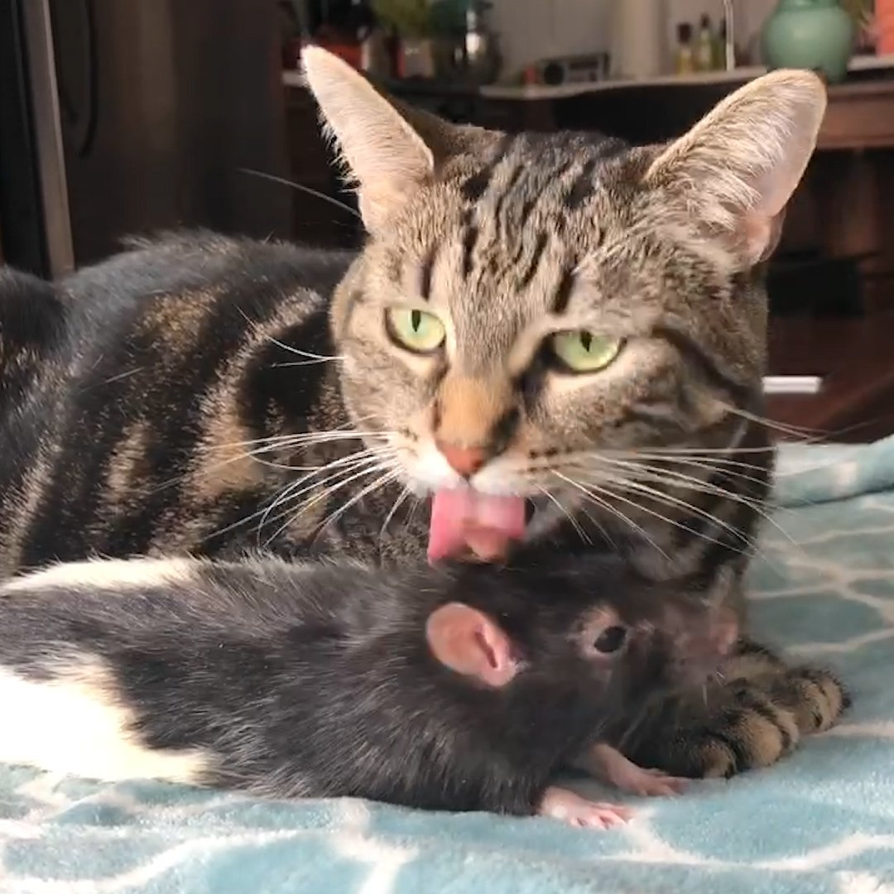

Этого не ожидал никто
p
Крысу мужского пола, которой позже дали кличку Купер, вместе с его сородичами продавали в Нью-Йоркском зоомагазине исключительно на корм змеям.
Купер и другие крысы из этой клетки считались принадлежащими к декоративной породе дамбо, но уши у них были вполне обычными (у дамбо крыс уши крупные) , а шерсть была обычного рыжеватого окраса как у диких крыс-пасюков. Поэтому в качестве домашних питомцев этих крыс в зоомагазине почти никто не покупал.
Когда в этот магазин пришла 55-летняя Полин Морин и увидела табличку на клетке с крысами "На корм змеям", ей стало очень жалко грызунов. Не долго думая, Морин купила в зоомагазине всю клетку с этими крысами и принесла их домой. А потом одна крыса выбралась из клетки и пошла гулять по дивану. В этот момент крысой заинтересовалась кошка Полин по кличке Пруденс.
Три года назад Пруденс подобрали с улицы и Полин взяла ее из приюта. Пруденс возможно ранее была знакома с крысами, однако при виде этой крысы она не высказала никакой агрессии, а после и вовсе подошла, легла рядом и начала вылизывать крысу словно та была ее котенком.
p